CNC portfolio
Elva övningar i svarv
- Alla ritningar och modeller skapat i Fusion 360
- NC-programmering i Fusion 360 och Mastercam
- Skärdata från Sandvik CoroPlus® Tool Guide
- Verifiering av toolpath i CIMCO och Vericut
- Analys av gouge och excess i Vericut
- Användning av grov- och fincykler, borrcykler och gängcyklerG70–G73, G76, G83
- Nosradiekompensering G42 och G41
Öppna avgångsprojektet
Verktyg och programvara jag arbetar med
CAM, simulering och skärverktyg från utbildningen
-
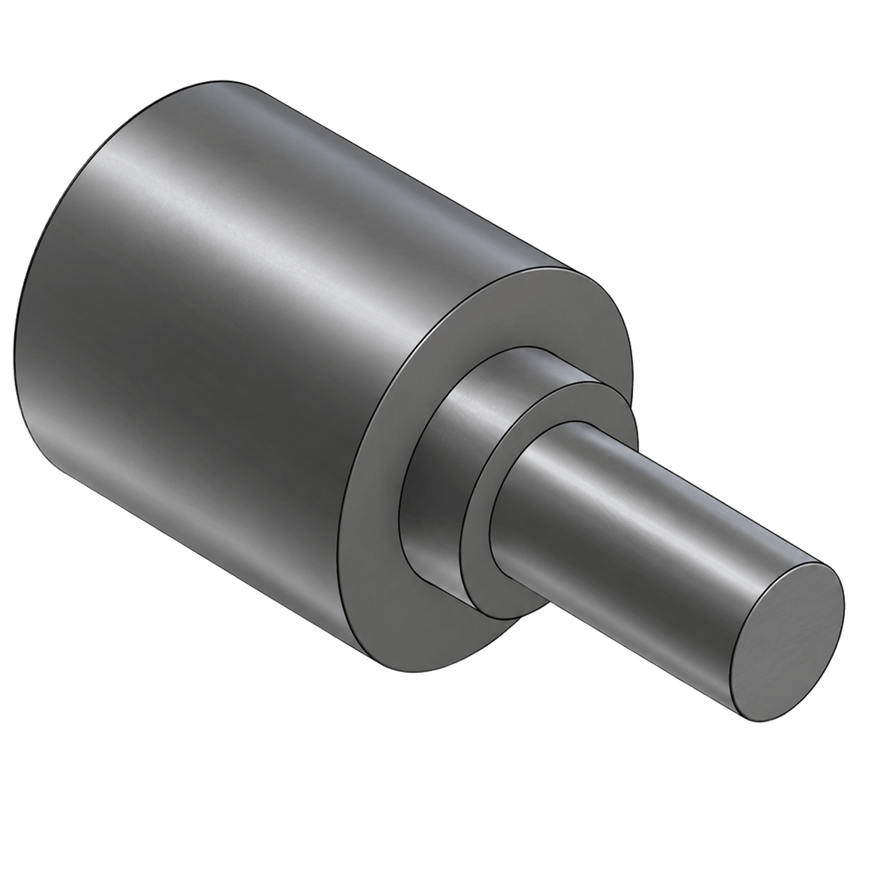
-
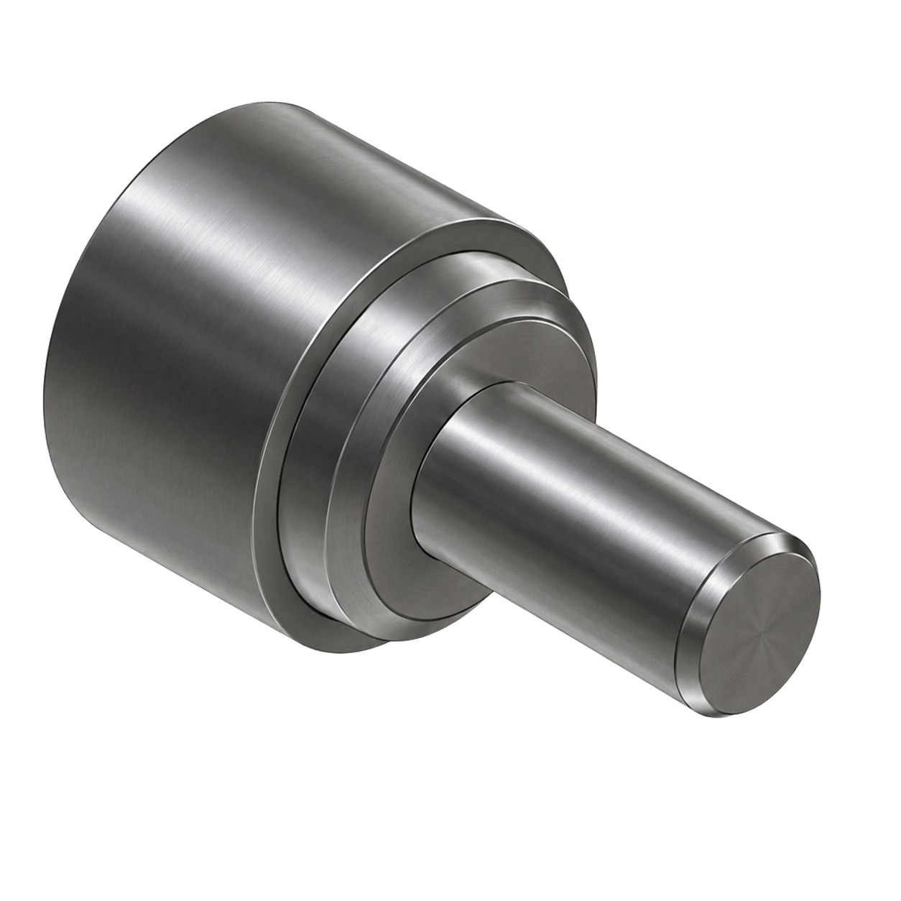
-
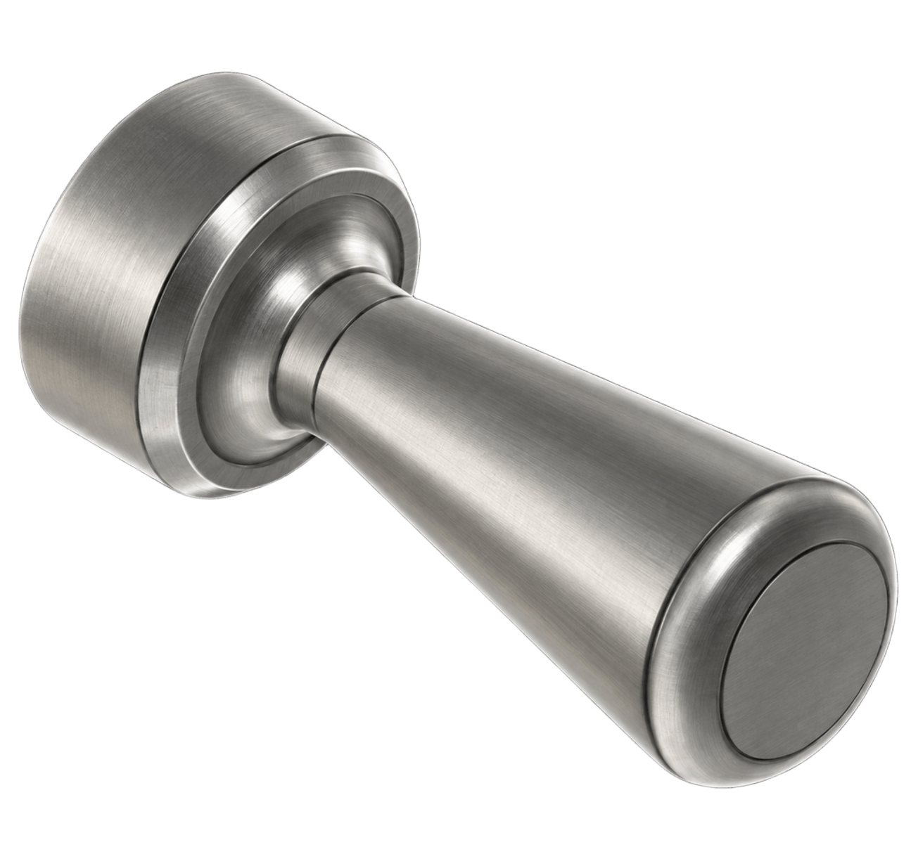
-
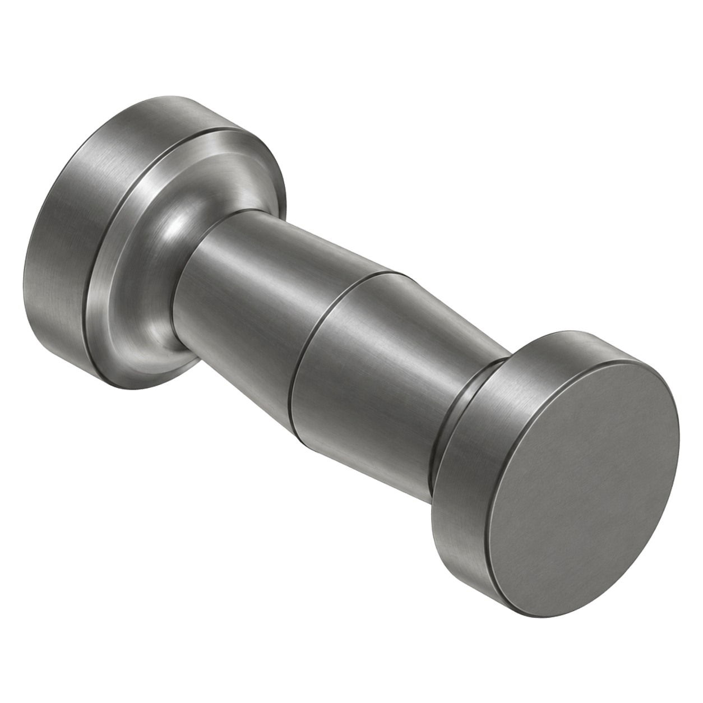
O00004Spindel med konisk midja
Rundad ände, konisk midja och platt skiva. Kräver jämna radier.
Visa projekt -
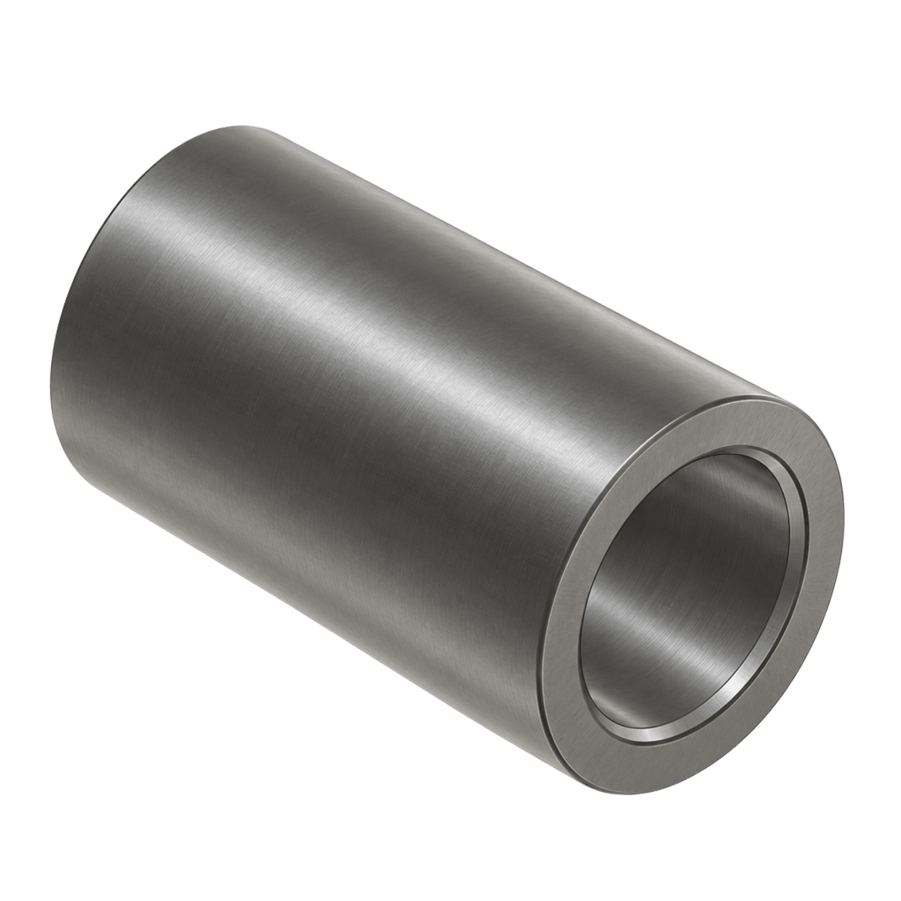
-
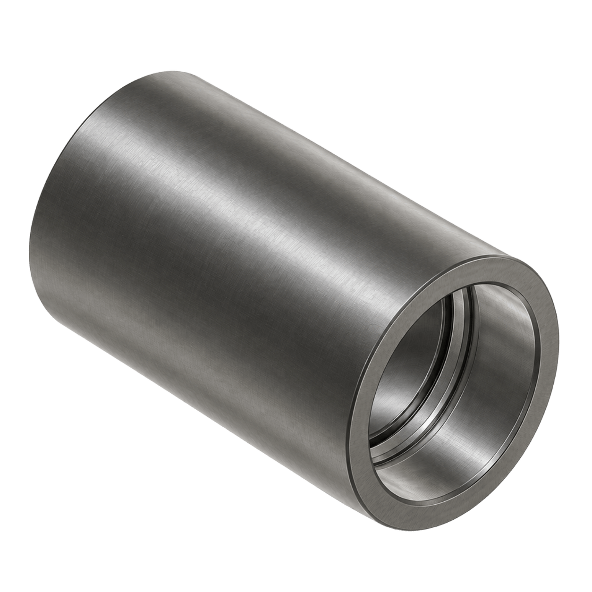
O00006Hylsa med invändigt steg
Hylsa med ett steg på insidan. Övar borrning och invändig svarvning.
Visa projekt -
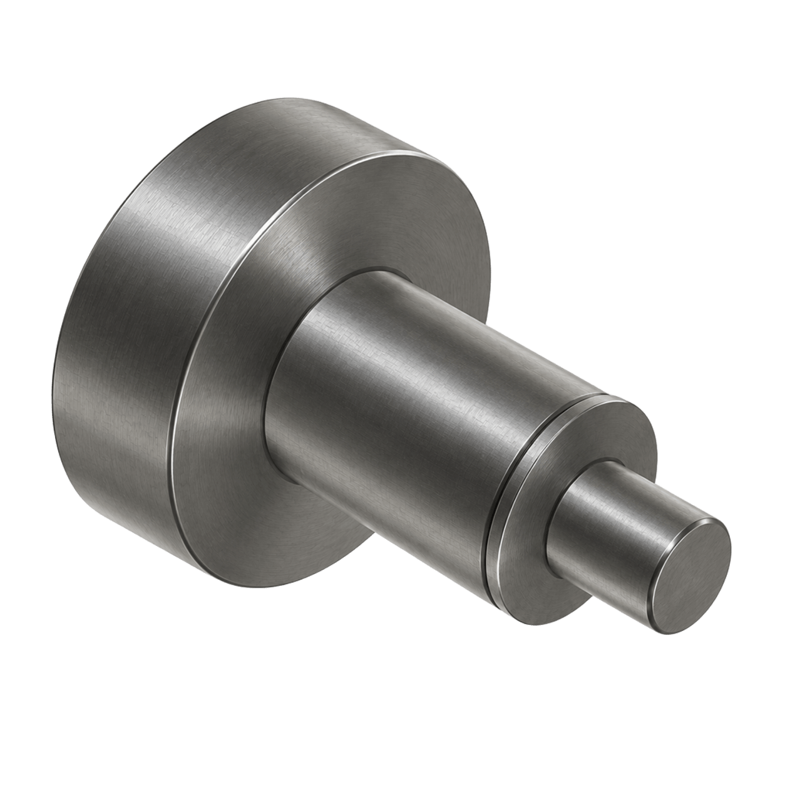
-
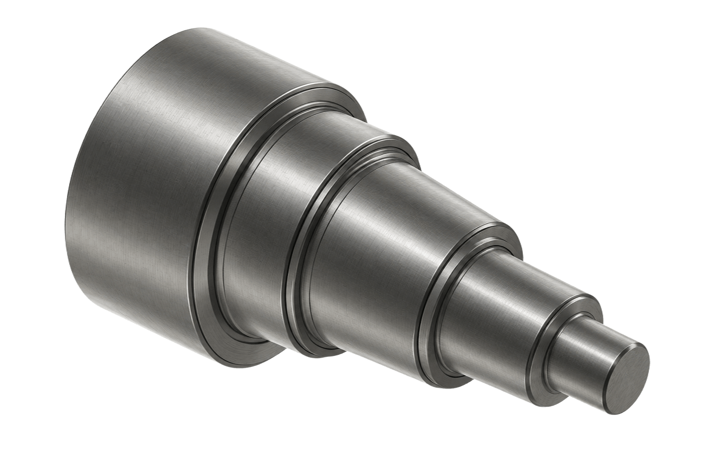
-
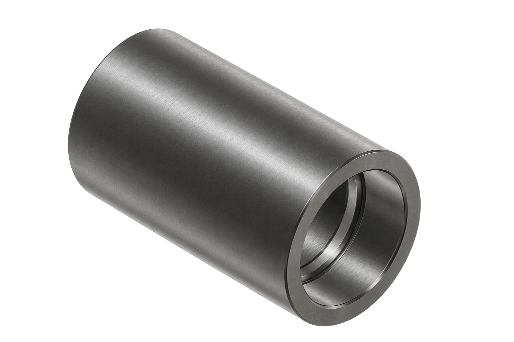
O00009Hylsa med invändig urtagning
Hylsa med urtag på insidan. Övar invändigt urstick.
Visa projekt -
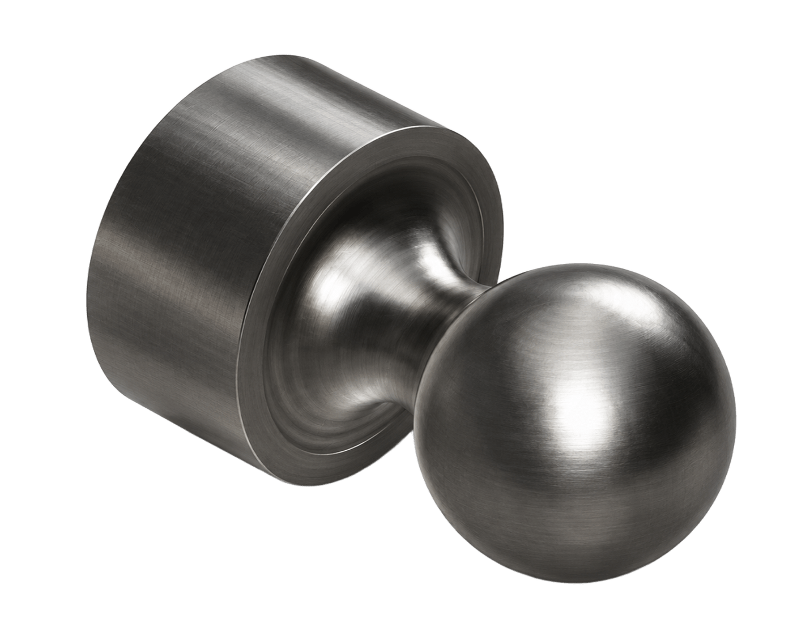
-
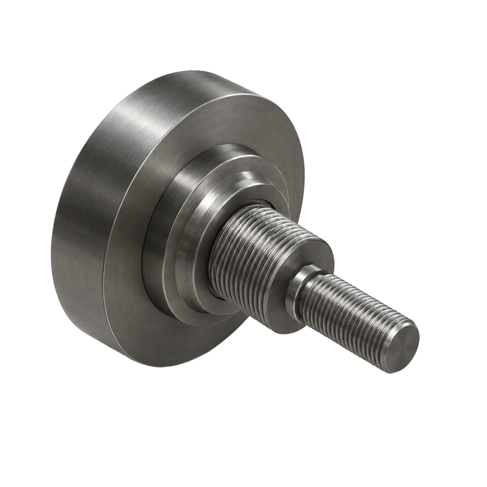